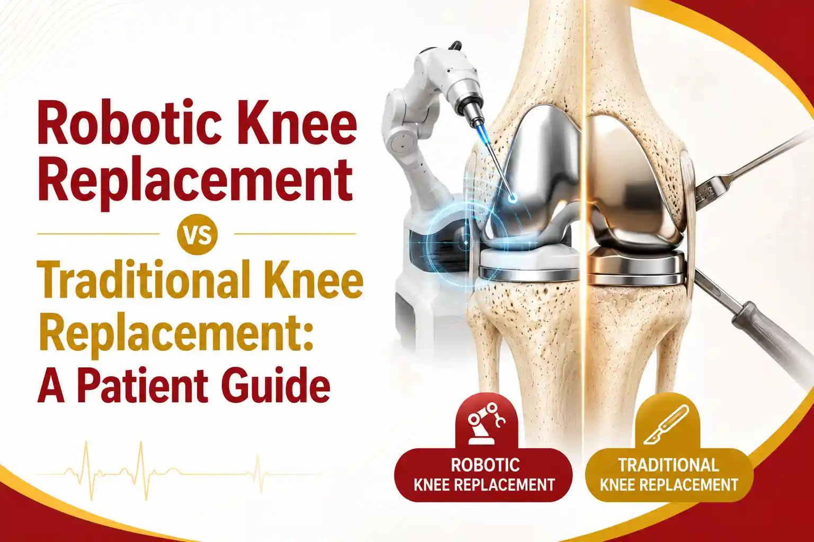

Medically Reviewed by
DR. MIR JAWAD ZAR KHANMBBS, MS - Orthopedic
M.CH-(Ortho) Joint
Replacement surgeon
Robotic Knee Replacement vs Traditional Knee Replacement: A Patient Guide
If knee replacement has been suggested for you, you have probably come across the choice between robotic knee replacement and traditional knee replacement. It is a fair question to ask, because the words sound very different, and the marketing around new technology can be loud.
This guide gives you a clear, honest comparison based on current medical evidence and the surgical experience of Dr. Mir Jawad Zar Khan, senior joint replacement surgeon and Chairman of Germanten Hospitals in Hyderabad, so you can make a confident decision with your surgeon.
What Is Robotic Knee Replacement?
Robotic knee replacement follows the same basic principle as traditional knee replacement. The surgeon removes the worn cartilage and bone from the arthritic knee and fits an artificial joint, called a prosthesis.
The difference lies in how the plan is made and carried out. In a robotic procedure, a CT scan or special X-rays are used to build a three-dimensional model of your knee before surgery. During the operation, a robotic arm or guidance system helps the surgeon position the implant and make bone cuts to within a fraction of a millimetre.
It is important to understand one thing clearly: the robot does not perform the surgery on its own. Your surgeon remains fully in control at every step. The robot is a precision tool that assists the surgeon, not a replacement for the surgeon.
What Is Traditional Knee Replacement?
Traditional knee replacement, also called conventional or manual knee replacement, is a well-established procedure with decades of proven results. The surgeon uses mechanical jigs, alignment guides, and considerable clinical skill and experience to position the implant.
Millions of people worldwide have regained pain-free movement through traditional knee replacement surgery, and for most patients it remains an excellent and reliable option. The technique is time-tested, widely available, and, in experienced hands, delivers very high success rates.
Robotic vs Traditional: How They Compare
Here is where an honest look at the evidence helps. Large reviews of randomised controlled trials, the highest quality of medical evidence, have compared the two approaches carefully.
- Implant alignment and accuracy: Robotic assistance consistently improves the accuracy of implant positioning and alignment, with fewer cases falling outside the ideal range. This is the clearest, best-supported advantage of the robotic approach.
- Function and pain relief: In the short to medium term, patient-reported outcomes such as pain scores and knee function are broadly comparable between robotic and traditional surgery. Both approaches relieve pain and restore movement well.
- Complications: Overall complication rates are similar between the two methods.
- Operating time: Robotic procedures can take a little longer, partly because of the extra planning and setup.
- Long-term durability: Better alignment is expected to help implants last, but very long-term comparative data are still being collected, so this benefit is promising rather than fully proven.
Sources: Systematic reviews and meta-analyses of randomised controlled trials comparing robotic-assisted and conventional total knee arthroplasty, indexed on NIH PMC and the Journal of Robotic Surgery.
| Factor | Robotic knee replacement | Traditional knee replacement |
|---|---|---|
| Implant alignment accuracy | Higher, fewer outliers | Very good in experienced hands |
| Planning | 3D model from a scan | Standard imaging and jigs |
| Pain relief and function | Excellent | Excellent, comparable short term |
| Complication rate | Similar | Similar |
| Operating time | Can be slightly longer | Well established |
| Availability and cost | Fewer centres, may cost more | Widely available |
Advantages and Disadvantages of Robotic Knee Replacement
To keep the decision balanced, it helps to see both sides clearly.
Advantages
- Greater precision in bone cuts and implant placement, personalised to your knee anatomy.
- Fewer alignment outliers, which is the main measurable benefit in the research.
- Smaller, more controlled corrections, which may mean less disturbance to healthy tissue.
- Real-time information during surgery, allowing fine adjustment of the implant position.
Disadvantages
- Higher cost in many cases, and availability limited to centres with the technology.
- Slightly longer operating time.
- The measurable improvement in alignment has not yet been shown to guarantee better long-term function than a well-performed traditional procedure.
- Results still depend heavily on the surgeon. Technology supports skill, it does not replace it.
Who Is a Candidate for Each Approach?
The good news is that if you qualify for a traditional knee replacement, you are very likely a candidate for a robotic-assisted one as well. Suitable patients usually have advanced arthritis causing persistent pain and limited movement that no longer responds to non-surgical care.
Robotic assistance can be especially useful in knees with significant deformity, complex anatomy, or previous hardware, where precise planning is valuable. The final choice should be made with your surgeon, based on your specific knee, your overall health, and what is realistic for you.
At Germanten Hospitals, which is among the few centres in India equipped with a robotic arm for knee implants, Dr. Jawad discusses both options honestly and recommends the approach that best fits each patient.
Recovery: What to Expect Either Way
Recovery after knee replacement is broadly similar for both techniques, because the goal and the implant are the same. Most patients are helped to stand and take a few steps within a day, with physiotherapy starting early to rebuild strength and movement.
A structured rehabilitation plan over the following weeks is the single biggest factor in a good result, regardless of whether the surgery was robotic or traditional. Following your physiotherapy programme, managing your weight, and attending follow-up reviews matter far more to your outcome than the choice of technology alone.
Conclusion
The choice between robotic and traditional knee replacement is not about hype, it is about fit. Robotic knee replacement offers measurable precision in implant alignment and is a strong option, especially for complex knees. Traditional knee replacement remains a proven, reliable procedure that gives excellent results for most people.
What matters most is an accurate diagnosis, an experienced surgeon, the right implant for you, and a committed recovery. A good surgeon will help you weigh both options honestly rather than pushing one for its own sake.
Talk to a Joint Replacement Specialist in Hyderabad
Whether robotic or traditional is right for you depends on your knee and your goals. Book a consultation with Dr. Mir Jawad Zar Khan at Germanten Hospitals, Hyderabad, one of the few centres in India offering robotic-assisted knee replacement, for a clear, personalised recommendation.
Book ConsultationFrequently Asked Questions
Is robotic knee replacement better than traditional?
Robotic assistance reliably improves implant alignment accuracy. In the short to medium term, pain relief and function are comparable to a well-performed traditional replacement. So robotic surgery is more precise on paper, while both approaches give excellent results in experienced hands.
Does the robot do the surgery by itself?
No. The surgeon plans and performs the surgery and stays in full control throughout. The robotic arm is a guidance tool that helps with accuracy.
Is robotic knee replacement more painful or riskier?
No. Complication rates are similar to traditional surgery, and the more precise cuts may mean less disturbance to healthy tissue. Any surgery carries risks, which your surgeon will explain.
Does robotic knee replacement cost more?
It often costs more than traditional surgery because of the technology involved, and it is available at fewer centres. Discuss costs and insurance coverage with the hospital before you decide.
How long does the implant last?
Modern knee implants commonly last many years. Better alignment is expected to support implant longevity, though very long-term head-to-head data comparing the two techniques are still being gathered.
References


DR. MIR JAWAD ZAR KHAN
MBBS, MS - Orthopedic, M.CH-(Ortho) Joint Replacement Surgeon
As the visionary Chairman and Managing Director of Germanten Hospitals, Hyderabad, Dr. Mir Jawad Zar Khan brings over two decades of surgical leadership to the field. He is dedicated to transforming lives through evidence-based treatments, advanced robotic technology, and a commitment to patient quality of life.